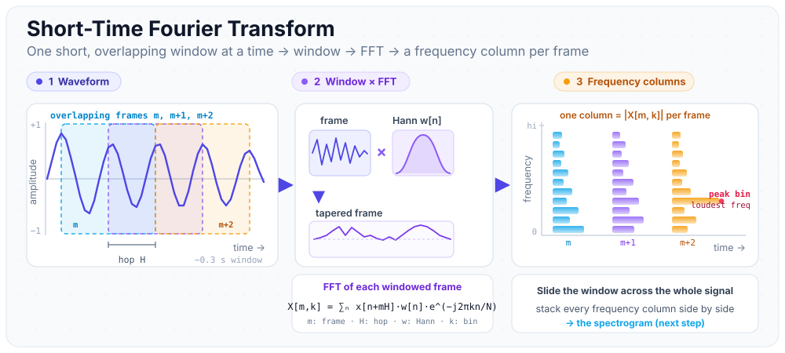
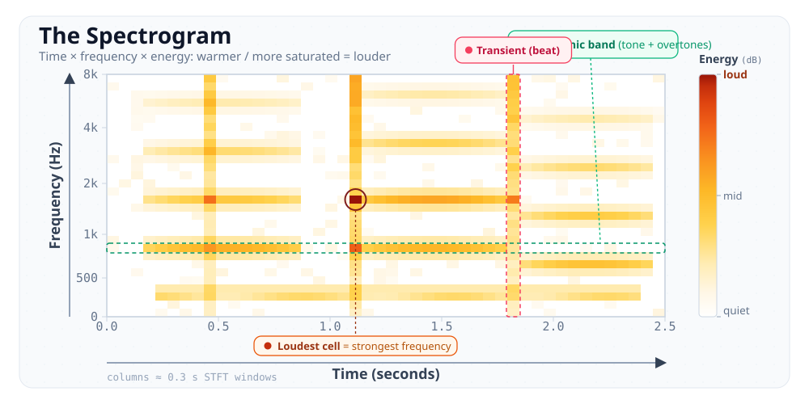
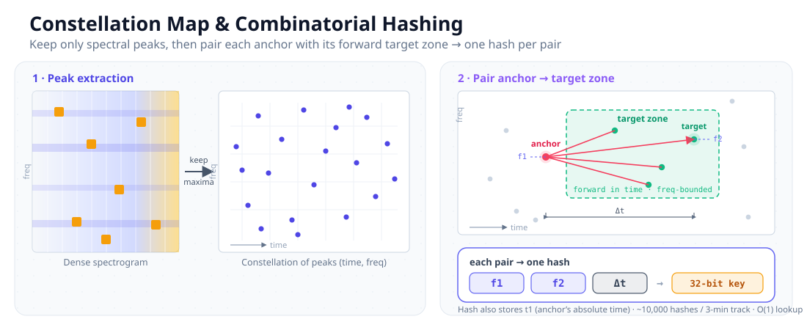
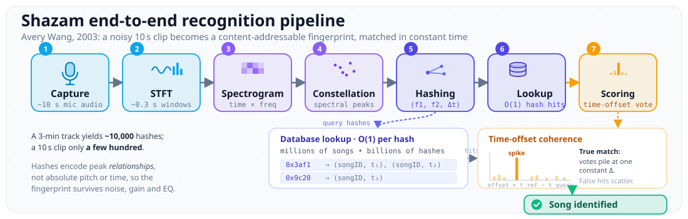

I saw this breakdown on LinkedIn about how Shazam works and it honestly made me appreciate how elegant real engineering can be. Not elegant in the "clean code" sense that Twitter argues about. Elegant in the mathematical sense. Where a problem that seems fundamentally impossible gets reduced to something almost trivially simple through a series of clever transformations.
Think about what Shazam actually does. You hold your phone up in a noisy bar, music playing through cheap speakers, people talking over it, glasses clinking. Ten seconds later it tells you the exact song. How? The raw audio your phone captures sounds nothing like the studio recording. The volume is different, the frequency response of the speakers colors everything, background noise is layered on top. Comparing waveforms directly is hopeless. Two recordings of the same song look completely different as raw signals.
So how do you match something when the thing you're matching against has been distorted beyond recognition?
The Paper That Started It All
The answer lives in a paper from 2003 by Avery Wang, one of the co-founders of Shazam. "An Industrial-Strength Audio Search Algorithm." That title alone tells you something. This wasn't an academic exercise. This was built to work at scale, in production, on real phones with real noise. And here's the wild part: the core algorithm described in that 2003 paper still powers Shazam today. Over twenty years later. In a field where everything gets replaced every few years, this algorithm has survived because the math is just that good.
The pipeline has five major steps. Each one is beautiful on its own, but it's the way they compose together that makes the whole thing sing (pun intended, no regrets).
Step 1: The Fourier Transform
Audio is a pressure wave. A single stream of amplitude values over time. But music isn't one frequency. It's hundreds of frequencies layered together. A guitar chord, a vocal, a kick drum, all happening simultaneously, all mashed into one signal.
The first step is to pull those frequencies apart. The audio gets divided into short overlapping windows, roughly 0.3 seconds each, and each window gets hit with a Short-Time Fourier Transform (STFT). This decomposes the complex audio signal into its constituent frequency components.
The best analogy I've seen: think of a prism. White light goes in, and a rainbow comes out. The prism doesn't create new colors. It separates what was already there into individual components. The STFT does the same thing to sound. A messy audio signal goes in, and you get a clean breakdown of which frequencies are present and how loud each one is.

One window gives you a snapshot of which frequencies are active at that moment. But a song evolves over time. You need the whole picture.
Step 2: The Spectrogram
Stack all those frequency snapshots side by side and you get a spectrogram. It's a 2D grid where the x-axis is time, the y-axis is frequency, and the brightness or color at each point represents intensity (how loud that frequency is at that moment).

This is already a massive improvement over raw audio. You've gone from a 1D waveform that's sensitive to volume and noise to a 2D representation that captures the structural content of the music. Every song produces a distinct spectrogram. The pattern of frequencies rising and falling, the rhythm of the beats, the harmonic structure of the instruments. It's all there.
But a spectrogram is still a dense image. Comparing spectrograms pixel by pixel across millions of songs is computationally brutal. We need to compress further.
Step 3: Peak Extraction and the Constellation Map
Here's where Wang's insight really kicks in. Most of the energy in a spectrogram is noise or unimportant background. The signal that actually defines a song lives in the peaks: the loudest frequency components in each local time-frequency region.
So you scan the spectrogram and keep only the local maxima. The bright spots. Everything else gets thrown away. What remains is a sparse scatter of points in time-frequency space.

Wang called this a "constellation map" and the name is perfect. It looks exactly like a star chart. A scattering of bright points against a dark background, each one at a specific time and frequency coordinate. And just like real constellations, each song has a unique arrangement.
The beauty of this representation is its robustness. Background noise in a bar? It adds energy across the spectrogram, but it rarely creates new peaks that are louder than the actual music. Volume differences? Peaks are defined by relative loudness in a local neighborhood, not absolute amplitude. The constellation map survives distortion that would destroy a raw waveform comparison.
Step 4: Combinatorial Hashing (The Genius Part)
A constellation map is great, but you still can't efficiently search through it. You need something hashable. Something you can throw into a hash table for O(1) lookup.
Wang's solution: take pairs of nearby peaks and encode the geometric relationship between them. Specifically, for each pair you record three numbers: the frequency of peak 1, the frequency of peak 2, and the time difference between them. Pack those three values into a single hash.
A typical 3-minute song generates roughly 10,000 of these hashes. Each hash also carries an offset (the absolute time of peak 1 in the original song) so you know where in the song that pair occurs.
This is the part that made me sit back when I first understood it. Think about what these hashes encode. Not absolute frequencies (which change with pitch shifting). Not absolute times (which depend on where you start listening). They encode relationships between peaks. The delta in frequency. The delta in time. These relationships are invariant to most forms of real-world distortion. Play the song louder? The peak frequencies don't change. Record it on a phone in a noisy room? The dominant peaks are still the dominant peaks, and the time gaps between them are identical.
By encoding structure rather than content, you get a fingerprint that's stable across wildly different recording conditions. That's the core insight and it's genuinely brilliant.
Step 5: The Lookup
Now comes the payoff. Shazam has pre-computed these hashes for every song in its database. Millions of songs. Billions of hashes. All sitting in a giant hash table.
When you hold up your phone and record a 10-second clip, the app runs the exact same pipeline on your clip: STFT, spectrogram, peak extraction, combinatorial hashing. It generates a few hundred hashes from your short recording. Then it looks each one up in the hash table.
Each lookup is O(1). Constant time. The database could have 10 million songs or 100 million songs and the lookup time per hash does not change. Shazam doesn't search through 10 million songs. It looks up a hash. That's a fundamentally different operation.

Of course, some hashes from your noisy clip won't match anything. Some might match the wrong song by coincidence. So Shazam uses a scoring step: for each candidate song, it checks whether the matching hashes are time-coherent. If hash A matched at offset 45s and hash B matched at offset 47s, and the time gap between them in your clip is also 2 seconds, that's a coherent match. Random false matches won't line up temporally. Real matches will. This temporal verification step eliminates false positives almost entirely.
Why This Matters
Step back and look at what just happened. We started with an analog audio signal. A continuous pressure wave captured by a phone microphone in a noisy environment. Through a series of mathematical transformations, we converted it into a small set of discrete hashes that can be looked up in constant time against a database of millions of songs.
An intractable search problem (compare this waveform against millions of songs) was reduced to a hash table lookup. The entire pipeline converts an analog signal into a content-addressable fingerprint. That's the same idea behind content-addressable memory in hardware, behind Git's object store, behind how our brains probably work when we recognize a melody. You don't scan through every song you've ever heard. Something fires and you just know.
What gets me is the longevity. In 2003, smartphones barely existed. Shazam was originally designed for a system where you'd call a phone number, hold your phone up to the music, and get a text message back with the song name. The constraints were brutal: low bandwidth, noisy phone mics, limited server compute. And the algorithm Wang designed under those constraints turned out to be so fundamentally sound that it still works today, at a scale he probably never imagined, on hardware that would have seemed like science fiction.
There's a lesson in that. The best algorithms don't fight the constraints of their environment. They find representations where the constraints don't matter. Background noise doesn't matter if you're only looking at peaks. Volume doesn't matter if you're encoding frequency relationships. Recording length doesn't matter if you're doing O(1) lookups. Each design choice in the Shazam pipeline makes a specific real-world problem irrelevant. That's not just clever engineering. That's mathematical elegance applied to a messy, analog, human world.
Twenty years. Same algorithm. Still works. That's the kind of engineering I want to do.